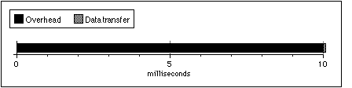
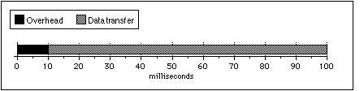
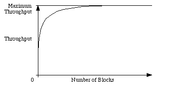
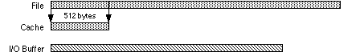
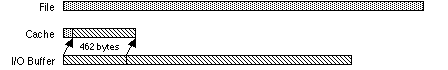
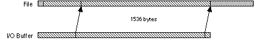
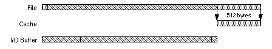
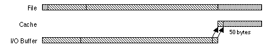
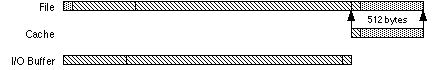

|
|
This Technote
discusses Mac OS file system input/output performance issues
and the File Manager's volume cache. It is assumed the
reader of this technote has a
good understanding of basic File Manager I/O routines.
This technote is directed at
application developers who are interested in getting the
most performance out of the traditional Mac OS file system.
[Sep 05 2000]
|
Introduction
The File Manager's input/output programming interface
hasn't changed much since 1984. There are a half dozen new
ways to open a file, but when it gets down to accessing the
data in a file, you still end up using the same read and
write calls the Mac OS started with. Since little has
changed, most programmers pay little or no attention to how
their programs access files until they find the overall
performance of their program depends on file access speed.
This technote shows you how to
get the best throughput from the file system using a variety
of techniques.
Although this technote's
primary focus is on the built-in HFS and HFS Plus file
systems, the techniques described will likely improve
performance when used with any other file system.
|
Note:
The intent of this technote is to tell how to
use the File Manager API to improve the performance
of file I/O, not to describe in detail the
processes and steps taken by the file system to
perform file I/O. Thus, the descriptions of the
processes and steps taken by the file system to
perform file I/O are much simpler than what
actually take place.
|
Each time you read or write data to a file, a file system
must perform several steps which ultimately end up
transferring data between your buffer and the disk. For the
purposes of this technote,
we'll divide that time up into two categories: data transfer
time and request overhead time. The first step to improving
file I/O performance is to reduce the amount of request
Back to top
Increase the Size of I/O Requests
The size of your read and write requests can make more
difference to file I/O performance than any other factor
under your control. Here's why:
- Each request will incur some request overhead time.
- Each request will involve one or more calls to a disk
driver through the file system cache, or to a network
device through a network driver.
- Each request may cause one or more data transfers
from the disk driver and the disk device, or the network
driver and network device. A device access may be very
fast (reading data from or writing data to a disk
device's or disk driver's cache), or very slow (waiting
for a stopped floppy disk drive to come up to speed and
then reading or writing the data).
Let's look at an example: reads from a fast (by the
standards of the time this technote was written) SCSI hard disk
drive with an average access time of approximately 10
milliseconds and a Power Macintosh class system with a SCSI
transfer rate of approximately 5 megabytes per second or 0.1
milliseconds per 512-byte disk block. When a single disk
block (512 bytes) is read, the time spent reading the block
looks like that shown in Figure 1.

Figure 1. One block transfer with 10 ms
average access time
The overhead time on this single block read is over 99%
of the total time, giving you a throughput of 49.5K per
second (that's about half the transfer rate of a SuperDrive
floppy disk drive!). However, when the size of the read is
increased to 450K (Figure 2), the overhead time is reduced
to approximately 10% of the total time. That's because the
overhead remains essentially the same while the total number
of bytes transferred increases. This change makes the
adjusted throughput for this transfer 4.5 megabytes per
second.

Figure 2. 900 block transfer with 10 ms
average access time
If you were to make a graph comparing the size of your
I/O requests to the throughput of that request, you'd see a
curve like that shown in Figure 3.

Figure 3. Size of transfer versus
throughput of transfer
|
Important:
By increasing the size of your I/O requests, you
can maximize your usage of the device's ideal
throughput. DTS strongly
recommends an I/O size of at least 4 KB. 16 KB is
better. 64 KB is even better, although it's
approaching the point of diminishing
returns.
|
One last note on the size of I/O requests. In some
cases, you may actually want to limit the size of your I/O
requests. For example, large reads and writes to a file over
a slow network connection may make it look like the system
has locked up to the users of your program. Your program can
use the vmVolumeGrade field of the
GetVolParmsInfoBuffer structure (returned by
PBHGetVolParms) to scale the size of its I/O
requests for a particular volume's speed. See DTS Technote
1121
Mac
OS 8.1 for more information about how the Finder uses
this field.
Back to top
Block Align I/O Requests
After increasing the size of your I/O requests, the next
thing you should look at is the block alignment of your
requests.
When reading from or writing to a file on file systems
that use block devices, data is read or written in complete
disk blocks. When a read or write begins or ends in the
middle of a disk block, the file system must read that
entire block into a buffer owned by the file system (a cache
buffer) and then move data to or from your application's I/O
buffer. The worst case is a write that doesn't begin or end
on a block boundary, but is large enough to write one or
more full blocks.
For example, here are the steps the HFS Plus file system
must take to write 2048 bytes starting at offset 50 in the
file:
- Read the first block of the file into a file system
cache buffer.

- Copy 462 bytes from the application's I/O buffer into
the cache buffer starting at offset 50.

- Write the cache buffer containing the first block of
the file back to the disk.
- Write 1536 bytes from the application's I/O buffer to
the second through fourth blocks of the file.

- Read the fifth block of the file into a file system
cache buffer.

- Copy 50 bytes from the application's I/O buffer into
the cache buffer starting at offset 0.

- Write the cache buffer containing the fifth block of
the file back to the disk.

By not block aligning your I/O, your program's single
non-block aligned write request generated two read request
and three write requests to the disk driver. The extra two
reads and two writes increased the request overhead time by
400%. If the same size write request started at offset 0 in
the file, then there would have been only one write to the
disk driver.
|
Important:
If you make your reads and writes start on a
512-byte boundary and read or write in multiples of
512-bytes, you'll avoid extra read and write
requests and the request overhead time they
generate. For even better
results, align your I/O to 4 KB boundaries.
|
|
Note:
Why is 4 KB alignment better than 512 byte
alignment? On traditional Mac OS alignment beyond
512 bytes is irrelevant. However, the Mac OS X file
system is closely tied with the virtual memory
system, and the virtual memory system uses a 4 KB
page size. If you transfer data in 4 KB or larger
requests and align those requests on 4 KB
boundaries, you will get the best performance from
the Mac OS X file system. This technique will also
perform well on current and future traditional Mac
OS File Manager implementations.
|
While this note does not
cover all possible Mac OS X file system performance
optimizations, this advice is sufficiently simple
that it's worth covering here.
|
Note:
One particularly interesting case of unaligned I/O
occurs when you copy a file. A typical file copy
algorithm is shown below.
|
on copyFile source, dest
set bytesRemaining to size of source
while bytesRemaining > 0 do
if bytesRemaining > size of buffer
set bytesThisTime to size of buffer
else
set bytesThisTime to bytesRemaining
end-if
read bytesThisTime from source into buffer
write bytesThisTime from buffer into dest
set bytesRemaining to bytesRemaining - bytesThisTime
end-while
|
If the size of the copy
buffer is a multiple of 512 bytes, this algorithm
does all of its I/O aligned on block boundaries and
is very efficient. However, the last transfer can
cause a loss of efficiency. If the source file is
not an even multiple of 512 bytes long, the last
write will often result in two disk operations. The
first disk operation will write the bytes in the
buffer that even fit into 512-byte blocks. The
remaining bytes in the buffer will be placed in a
disk cache block and will eventually be written in
a separate disk I/O when that cache block is
flushed. If you are copying a lot of files, these
cache block flushes can represent a significant
overhead.
One interesting workaround
is to round up the last write to the nearest
512-byte boundary -- which actually writes extra
data to the end of the file -- and then call
SetEOF to trim off the extra bytes. The
exact algorithm is too complex to show here (for
example, it only makes sense to do this on
non-network volumes), but it is codified in the
MPFileCopy sample code.
Back to top
File System Cache Control
Next, you should look at how your programs use the data
they read and write.
The File Manager's cache is a buffer in RAM memory that
holds recently accessed disk blocks. When data is read from the disk into the
cache, subsequent accesses to those disks blocks can come
from the cache instead of causing additional disk accesses.
When data is written into the cache instead of going
directly to the disk, subsequent writes to the same disk
block won't cause an additional writes to those disk
blocks. (Cache blocks that contain different data
than the disk block they are associated with are "dirty"
cache blocks.) When used this way, the cache can greatly
improve the performance of your file I/O.
However, the File Manager's cache doesn't know how the
data in the cache is going to be used. When the File
Manager sends multi-block file I/O requests through the
cache, it always caches the blocks unless the size of the
request is very large or unless it's told not to in the read
or write request. The cached blocks stay in the cache until
they are reused, until the file is closed, or until the
volume is put offline, ejected, or unmounted.
Unless you do something about it, reads and writes
that have no reason to be cached will be cached and that
can cause increases in request overhead two ways: cached I/O
requests have more request overhead and cached I/O requests
can force other more useful cached data out of the cache.
Cached I/O request overhead can be minimal as in the case
where the request is small enough to use only unused blocks
in the cache. Or, the request overhead can be very large as
in the case where all of the blocks in the cache are in use
and dirty, and must be flushed to the disk before they can
be reused.
Cached I/O requests can force other more useful cached
data out of the cache. As an example, if you fill the cache
with data blocks from your file (that you won't be using
again in the near future), then cached catalog and volume
information used by the HFS Plus file system is flushed out
of the cache. The next time the HFS Plus file system needs
to read the catalog, it will have to flush your cached
blocks out of the cache just to reload the data it needs.
|
Important:
By following the following simple guidelines, most
applications can avoid both of these problems and
increase the file system performance for everyone.
|
- You should cache reads and writes if you
read or write the same portion of a file
multiple times.
- You should not cache reads and writes if you
read or write data from a file only once.
|
Warning:
An older version of this technote recommended
manipulating the low-memory global
CacheCom to control the File Manager's
cache. This method should be avoided because:
CacheCom is no longer supported
on Power Macintosh systems for native
applications (it isn't in "LowMem.h") and it
won't be supported by future versions of the
File Manager.CacheCom affects the system
globally. That means that your code affects all
other running programs that read or write and
that's not a friendly thing to do in a
multi-process environment.
|
So, how do you control what gets cached and what doesn't?
In a PBRead or PBWrite request, bits 4 and
5 of ioPosMode are cache usage hints passed on to
the file system that handles requests to the volume the file
is on (the cache control bits are also documented on pages
2-89 and 2-95 of Inside Macintosh: Files and in DTS Technote 1041 Inside
Macintosh--Files Errata). Bit 4
(pleaseCacheBit) is a request that the data be
cached. Bit 5 (noCacheBit) is a request that
the data not be cached. Bits 4 and 5 are mutually exclusive
-- only one should be set at a time. However, if neither is
set, then the program has indicated that it doesn't care if
the data is cached or not.
|
Bit
Number
|
Bit Mask
|
Description
|
n/a
|
0x0000
|
I don't care if this
request is cached or not cached.
|
pleaseCacheBit (4)
|
pleaseCacheMask (0x0010)
|
Cache this request if
possible.
|
noCacheBit (5)
|
noCacheMask (0x0020)
|
I'd rather you didn't
cache this request.
|
|
Note:
A particular file system (HFS Plus, AppleShare,
ISO-9660, and so on) may choose to ignore one or
both of the cache usage hint bits. For example, the
HFS Plus file system ignores bit 4. File systems
may cache when you set bit 5, may not cache when
you set the bit 4, may cache everything, or may
cache nothing. However, if a program leaves both
bits clear, then file systems which do
respect the cache hint bits have no way of knowing
if the data being read or written will be needed
again by your program.
|
The following high-level functions
show how to read and write with the no cache hint bit turned
on. These routines were taken from the MoreFiles sample code.
pascal OSErr FSReadNoCache(short refNum,
long *count,
void *buffPtr)
{
ParamBlockRec pb;
OSErr error;
pb.ioParam.ioRefNum = refNum;
pb.ioParam.ioBuffer = (Ptr)buffPtr;
pb.ioParam.ioReqCount = *count;
pb.ioParam.ioPosMode = fsAtMark + noCacheMask;
pb.ioParam.ioPosOffset = 0;
error = PBReadSync(&pb);
*count = pb.ioParam.ioActCount; /* always return count */
return ( error );
}
pascal OSErr FSWriteNoCache(short refNum,
long *count,
const void *buffPtr)
{
ParamBlockRec pb;
OSErr error;
pb.ioParam.ioRefNum = refNum;
pb.ioParam.ioBuffer = (Ptr)buffPtr;
pb.ioParam.ioReqCount = *count;
pb.ioParam.ioPosMode = fsAtMark + noCacheMask;
pb.ioParam.ioPosOffset = 0;
error = PBWriteSync(&pb);
*count = pb.ioParam.ioActCount; /* always return count */
return ( error );
|
Back to top
Cached I/O versus Data Integrity
The File Manager's cache can increase the performance of
certain I/O operations. However, it does open a window of
time where data can be lost if a system crashes. If the
system crashes when cache blocks hold data that hasn't been
flushed to disk (dirty blocks), the data in the cache is
lost. That can cause lost file data, or can cause volume
catalog corruption problems.
|
Note:
In Mac OS 7.6 the disk cache was modified to
periodically flush dirty blocks if the disk is
idle. See DTS Technote 1090
Mac
OS 7.6 for details.
|
Flushing Files and Volumes
The File Manager provides routines you can use to flush
cached file and volume blocks to disk. When a file or volume
is flushed, the dirty cache blocks associated with the file
or volume are written to disk. However, indiscriminate
flushing can affect performance, so an understanding of what
the flush calls actually do is an important part of using
the flush calls correctly.
PBFlushFile flushes an open file fork's
dirty cached data blocks, but may not flush catalog
information associated with the file. To ensure data
written to a file with PBWrite or
FSWrite is flushed to the volume, use
PBFlushFile.PBFlushVol flushes all open files on the
volume, and then, flushes all volume data structures. So
to ensure all changes to a volume, including the volume's
catalog and block allocation information, are flushed to
the volume, use PBFlushVol.
In addition to handling to PBFlushFile and
PBFlushVol requests, the file system flushes
files and volumes at other times:
- When a file fork is closed, the file is first flushed
and then, all cache blocks associated with the file are
removed from the cache. You don't need to flush a file
before closing it.
- When a volume is unmounted, ejected, or put offline,
the volume is first flushed and then, all cache blocks
associated with the volume are removed from the cache.
You don't need to flush a volume before unmounting it,
ejecting it, or putting it offline.
File Block Preallocation
Preallocating the space for a file can keep the file and
the volume from being fragmented. Accessing the data in an
unfragmented file will be
faster. The File Manager's Allocate and
AllocContig functions allow you to allocate
additional space to an open file. However, there are two
important points to note:
- The space allocated with
Allocate and
AllocContig is not permanently assigned to
that file until the file's logical EOF is changed to
include the allocated space. You can use
SetEOF to change the file's logical EOF to
include the allocated space. When a file (or volume) is
flushed or closed, the space beyond the file's logical
EOF is made available for other purposes.
Allocate and AllocContig
are not supported by all file systems. For example,
remote volumes mounted by the AppleShare file system do
not support Allocate and
AllocContig. To allocate space for a file on
any volume, use SetEOF.
A Simple Example of Balancing Cached I/O Performance
and Data Integrity
Given the information just provided, you should be able
to use the flush calls along with preallocating space for
your file to ensure that your data is safely on a disk
without incurring performance penalties during your I/O
operations. However, a small commented example can't hurt,
so...
enum
{
/*
** Set kMaxWrite to the largest amount of data your write proc will
** write in one call. Then, set kMinWritesPerAllocate to the minimum
** number of writes you want before more space is allocated.
*/
kMaxWrite = 0x10000,
kMinWritesPerAllocate = 4
};
/*****************************************************************************/
/*
** Prototype for the routine that writes data to a file.
** Your write procedure can make sure data is really written to disk by
** calling PBFlushFile, or you can block-align your requests and set the
** noCache ioPosMode bit in your calls to PBWrite (with the HFS file system,
** block-aligned requests with the noCache bit set are not cached).
*/
typedef pascal OSErr (*WriteProcPtr) (short refNum, Boolean *doneWriting,
void *yourDataPtr);
/*****************************************************************************/
/*
** MoreSpace checks to see if more space should be allocated to an
** open file based on the current position and the current EOF and
** if so, then allocates the space by extending the EOF.
** If more space is allocated, the volume is flushed to ensure
** the additional space is recorded in the catalog file on disk.
*/
OSErr MoreSpace(short refNum, short vRefNum)
{
OSErr result;
long filePos, logEOF;
result = GetFPos(refNum, &filePos);
if ( result == noErr )
{
result = GetEOF(refNum, &logEOF);
if ( (result == noErr) && ((logEOF - filePos) <= kMaxWrite) )
{
result = SetEOF(refNum, logEOF + (kMaxWrite * kMinWritesPerAllocate));
if ( result == noErr )
{
result = FlushVol(NULL, vRefNum);
}
}
}
return ( result );
}
/*****************************************************************************/
/*
** Simple example of creating and writing to a file.
*/
OSErr SafeWriteFile(const WriteProcPtr writeProc, void *yourDataPtr)
{
OSErr result;
Str255 prompt = "\pSave this document as:";
Str255 defaultName = "\puntitled";
StandardFileReply reply;
OSType creator = '????';
OSType fileType = 'TEXT';
short refNum;
Boolean doneWriting;
long filePos;
StandardPutFile (prompt, defaultName,& reply);
if ( reply.sfGood )
{
if ( reply.sfReplacing )
{
/* Delete old file */
(void) FSpDelete(&reply.sfFile);
}
result = FSpCreate(&reply.sfFile, creator, fileType, reply.sfScript);
if ( result == noErr )
{
result = FSpOpenDF(&reply.sfFile, fsRdWrPerm, &refNum);
if ( result == noErr )
{
/*
** Preallocate some space and flush the volume.
**
** Flushing the volume here makes sure the newly
** created file in the catalog file is flushed to
** disk and makes sure the space preallocated for
** file data is allocated on disk.
*/
result = MoreSpace(refNum, reply.sfFile.vRefNum);
/*
** Write file in pieces until we're done writing, or until
** an error occurs.
*/
doneWriting = false;
while ( (result == noErr) && !doneWriting )
{
result = (*writeProc) (refNum, &doneWriting, yourDataPtr);
if ( result == noErr )
{
if ( !doneWriting )
{
/*
** We're not done writing. Check allocated space,
** then allocate more space and flush the volume
** (to make sure the space is really allocated
** on disk) if needed.
*/
result = MoreSpace(refNum, reply.sfFile.vRefNum);
}
else
{
/*
** We're done writing. Truncate file to current
** file position.
*/
result = GetFPos(refNum, &filePos);
if ( result == noErr )
{
result = SetEOF(refNum, filePos);
}
}
}
}
/*
** Close the file (which flushes the file) and then
** flush the volume to ensure the file's final EOF
** is written to the volume catalog.
*/
(void) FSClose(refNum);
(void) FlushVol(NULL, reply.sfFile.vRefNum);
}
}
}
return ( result );
|
As shown in the example above:
- If changes are made to space that already exists in a
file (you are overwriting existing data before the file's
EOF),
PBFlushFile will ensure everything
written to the file is written to disk. In this case, the
only possible data loss in a system crash will be the
file's modification date.
- If changes are made to a file that affect the file's
EOF, the file's name, the file's Finder information, or
the file's location on the volume, then
PBFlushVol must be used to ensure the
changes to the file are written to disk.
Back to top
Summary
To get the best performance from
the Mac OS File Manager, you should:
- buffer data so that transfers
are 4 KB or larger,
- align all transfers to at least
512-byte boundaries (better yet 4 KB), and
- disable caching on requests
where you will be only looking at the data once.
In addition, you may want to examine how and why you
flush files or volumes, and preallocate space for new files.
There are other useful techniques not discussed in this
technote that you may want to
consider.
- You could implement your own buffering scheme above
the File Manager. For example, the file stream libraries
supplied by many object-oriented development environments
allow you to perform file I/O using a pointer or handle
to a RAM buffer.
- You can use asynchronous read or writes that overlap
with other non-File Manager operations, allowing your program to do
something besides show the watch cursor while file I/O is
performed. For example, the article, "Concurrent
Programming with the Thread Manager" in develop
issue #17 shows how to perform asynchronous I/O in
cooperative threads.
Back to top
References
Inside
Macintosh: Files
DTS Technote 1041
Inside
Macintosh--Files Errata
DTS Technote 1090
Mac
OS 7.6
DTS Technote 1121
Mac
OS 8.1
Asynchronous
Routines on the Macintosh, Jim Luther, develop
Issue 13
Concurrent
Programming with the Thread Manager, Eric Anderson
and Brad Post, develop Issue 17
MoreFiles
sample code
MPFileCopy
sample code
Back to top
Change History
Add this section if there are changes. If you're writing
a new technote, then you can remove this section.
|
01-June-1986
|
Originally written.
|
|
01-March-1988
|
Completely rewritten.
|
|
01-April-1995
|
Revised.
|
|
01-August-2000
|
Updated to include a
specific hint about avoiding extra disk writes
while copying files. Also made
numerous minor updates and cosmetic changes.
|
Back to top
Downloadables
|

|
Acrobat version of this Note (312K)
|
Download
|
Back to top
|